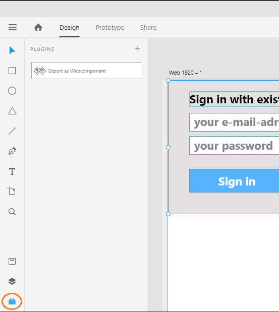
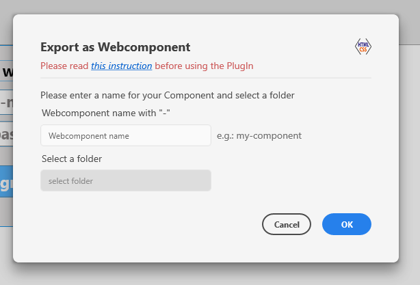

Step 4: Use the plugin¶
After selecting all elements, go to your plugin selection and choose “Export as Webcomponent”.

Where to find the plugin¶
A pop-up will appeare and you first have to enter a name for your component.
Hint
Make sure you don’t forget the “-” in the name.
Than you are able to select a folder to save your component.

Plugin pop-up¶
If everything is correct you can see the file path in the inputfield and the export will be safed automaticlly in the choosen folder.
You will get a short message and you can close the pop-up.
If anything went wrong to will also get a message and you have to check if you made a mistake.
To find common mistakes faster read the FAQs.